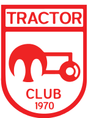

<nav class="navbar navbar-expand-lg navbar-light bg-light">
  <button class="navbar-toggler" type="button" data-toggle="collapse" data-target="#navbarTogglerDemo03" aria-controls="navbarTogglerDemo03" aria-expanded="false" aria-label="Toggle navigation">
    <span class="navbar-toggler-icon"></span>
  </button>
  <a class="navbar-brand" href="#"></a>

  <div class="collapse navbar-collapse text-center" id="navbarTogglerDemo03">
    <ul class="navbar-nav mr-auto mt-2 mt-lg-0">
      <li class="nav-item">
        <a class="nav-link" [routerLink]="['/profile']" routerLinkActive="active" [routerLinkActiveOptions]="{exact: true}">پروفایل</a>
      </li>
      <li class="nav-item">
        <a class="nav-link" [routerLink]="['/login']" routerLinkActive="active" [routerLinkActiveOptions]="{exact: true}">ورود</a>
      </li>
    </ul>
  </div>
</nav>

